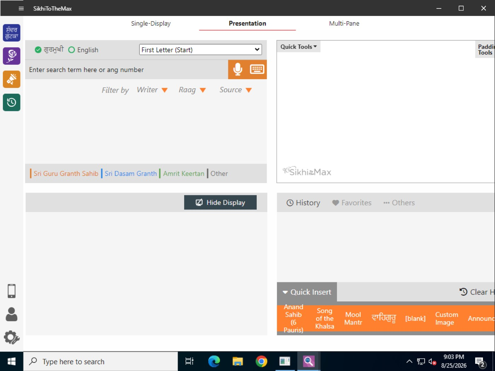
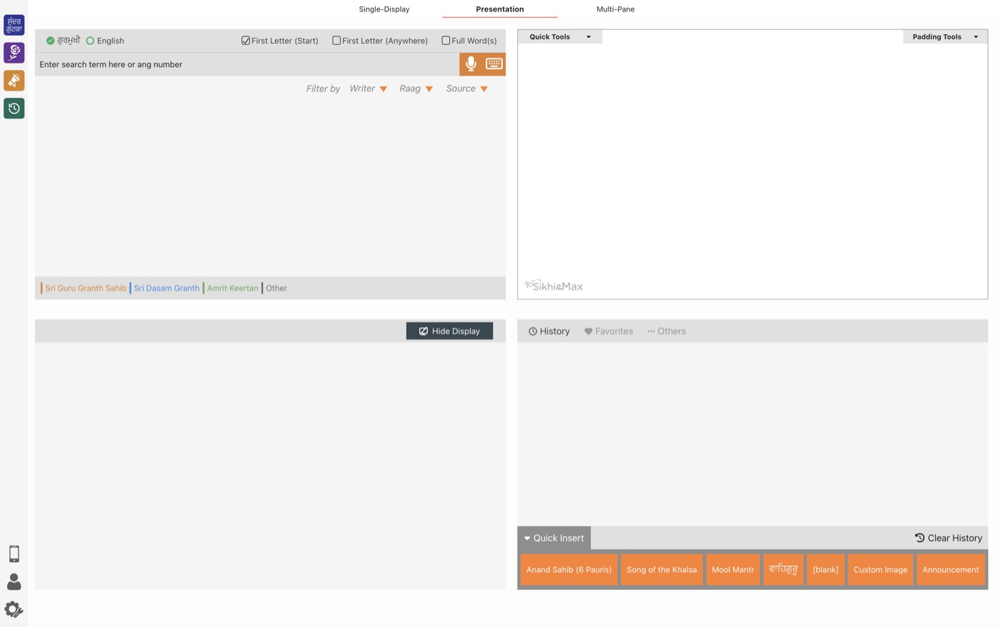

A customised build of the SikhiToTheMax shabad-display app for the European Youth Festival 2026. It installs as a separate app called SikhiToTheMax Dev, so it never touches or replaces an official SikhiToTheMax installation on the same computer.
75 second feature tour. Every app screen in it is a real capture of this build running on a Mac, recorded 8 October 2026.
A phonetic search mode that matches how a line sounds, what it means and its first-letter shape, so spelling does not matter. Typing “jo to prem” finds ਜਉ ਤਉ ਪ੍ਰੇਮ ਖੇਲਣ ਕਾ ਚਾਉ.
Search header, English, then Describe it (English)
Transliteration everywhere
Roman transliteration under the Gurmukhi in search results and in the shabad pane, in every search mode.
Search results, shabad pane, Recent Shabads
Readable Gurmukhi keyboard
Every on-screen key shows the letter, its sound and the physical key that types it.
Keyboard button next to the search box
Recent shabads
A toolbar list of opened shabads, newest first, with transliteration, ang, writer and raag. Saved to disk, so it survives a restart. Replaying an entry moves it to the top.
Left toolbar, clock icon
Song of the Khalsa as a ceremony
Loads into the shabad pane, steps with the arrow keys, shows in History and sizes with Quick Tools, like Anand Sahib does.
Quick Insert tray, next to Anand Sahib
Search that never freezes
Queries run in the main process and the phonetic index is pre-warmed in background slices. The first smart search used to freeze the window for over five seconds; typing now stays fluid.
Everywhere search is used
Fixed: a custom background image can be removed again (Settings, Theme).
Fixed: a fresh install no longer crashes while the search database is still downloading.
Install
Windows
Download the installer with the button above and open it from your Downloads folder.
Windows will likely show a blue “Windows protected your PC” screen, because this community build is not code-signed.
Click More info, then Run anyway. This screen is expected for this build. If you would rather double-check first, scan the file with your antivirus before running it.
Follow the installer: Next, then Install. It installs for your user account only, so no administrator password is needed.
Launch SikhiToTheMax Dev from the Start menu.
On first launch the app downloads the shabad database. Leave it connected to the internet for a few minutes; search becomes available once the download finishes.
Mac
Download the disk image with the button above and open it.
Drag SikhiToTheMax Dev into the Applications folder shortcut, then eject the disk image.
First open: in Applications, right-click the app, Open, Open.
If macOS says the app “is damaged and can’t be opened” or “cannot be checked for malicious software”, that is macOS quarantining an unsigned community build; the file is fine. Open the Terminal app, paste this line, press return, then open the app again:
xattr -cr "/Applications/SikhiToTheMax Dev.app"
On first launch the app downloads the shabad database. Leave it connected to the internet for a few minutes.
Tested before sharing
✓ Verified working
Both installers were installed and launched from scratch, and the running app was checked programmatically: the interface confirmed fully loaded, title SikhiToTheMax, version 9.3.2. Windows was tested on a clean Windows Server 2022 machine on GitHub Actions. Mac was tested on an Apple Silicon Mac, installed from this exact DMG. The checksums above match the files on the release page.

Windows: freshly installed and launched on a clean machine

Mac: installed from the DMG and launched
Good to know
Not code-signed. Windows SmartScreen and macOS Gatekeeper will warn once. The install steps above show how to get past the warning.
Apple Silicon only. There is no build for Intel Macs.
Needs internet on first launch to download the shabad database, the same as the official app.
Runs alongside the official app. Your existing SikhiToTheMax installation and its settings are left untouched.